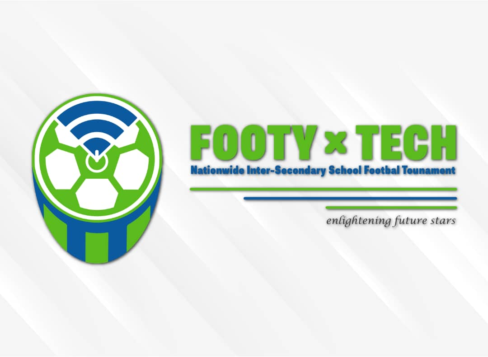
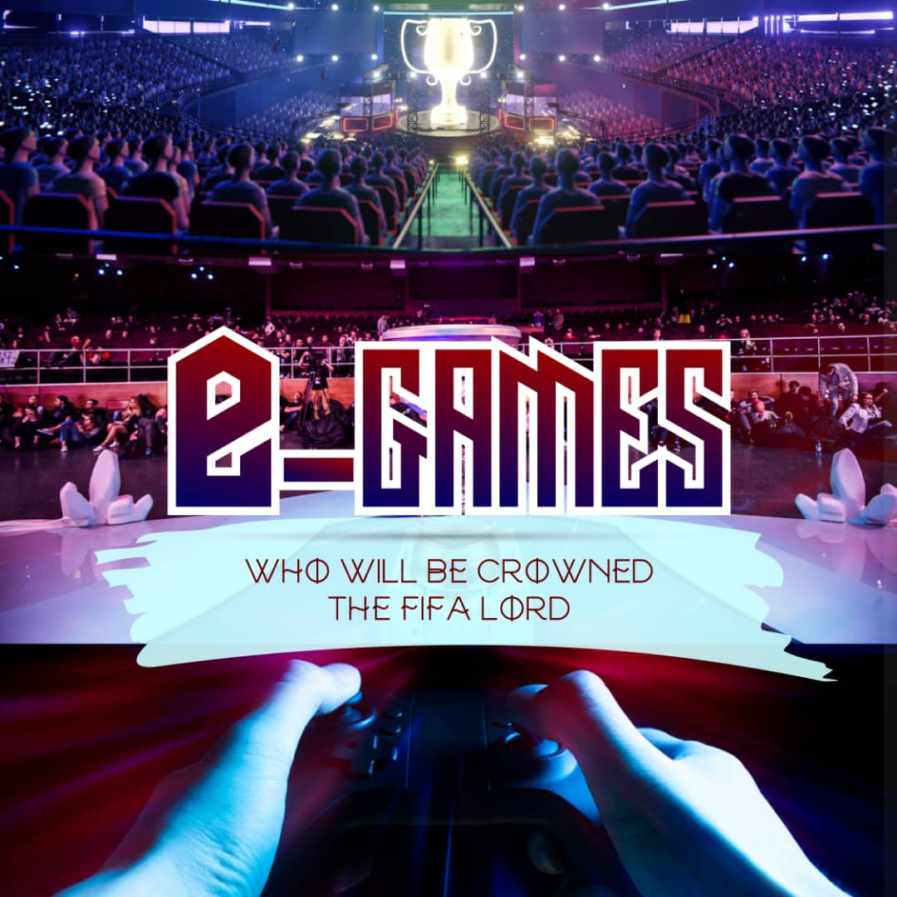

Nationwide Inter Secondary School Footy Tech
NISSFT was created to enlighten and illuminate future stars. The tournament is a educational initiative born out of the burning desire to educate the young minds about the needs and demands of the outside world while using football as a gateway to the heart of the next generation. Football is the most followed sport among young Nigerians; But tech is the future. Hence, the need to teach Secondary School students the basics of web programming and mobile app development through a tech workshop that will hold in each school.

e-Games
e-Games: Who will be crowned the FIFA Lord?
The FIFA Lord League is a video game festival and hub as well as a championship that will bring professional video game players and developers together to build a viable and sustainable video game industry in Nigeria. These stakeholders, who have various roles in the ecosystem, will develop pathways to ensure the e-sport industry in Nigeria is vibrant and active.
Purpose: Develop a viable e-sport ecosystem in Nigeria capable of providing career opportunities in the video gaming industry for Nigeria’s youths.
Aim: Ensure Nigeria’s active involvement in the e-sport industry worth over $1.1billion and with a yearly growth of 15%.
Structure:
The FIFA Lord League is a community of video gamers, enthusiasts, developers and stakeholders whose mode of operation is through an e-Games summit and e-sports league. The e-Games summit is an event that will bring together the key stakeholders to brainstorm on various ways to boost the e-sports industry in Nigeria and create opportunities for many youths in this industry. The e-Games summit will hold twice a year.
The FIFA Lord League is a competitive championship that will feature video gamers across Nigeria who will vie for the championship spot through weekly battles and face-offs. The championship format will be in the form of a league where each player face-offs for a chance to move to the top of the table. The log leader at the end of the tourney gets a cash prize, while the bottom three players are relegated to a lower league.
Benefit:
- Create a pathway through which Nigeria can tap into the global e-sport industry
- Develop Nigeria’s e-sport industry to ensure it can attract foreign investment
- Ensure Nigeria’s youth have a viable alternative career path which they can pursue and create a better life for themselves
- Create a community whereby stakeholders in the e-sports industry can brainstorm and share ideas that will ensure the growth of the industry in Nigeria
- Create an atmosphere where innovation and creativity will be encouraged among the youths
Why you should support us:
- We are creating a nationwide network video games enthusiasts. A network that could unlock investments in the e-sports sector in Nigeria.
- We are creating a community of young and vibrant youths who make up more than 50% of Nigeria’s population. An important demography to corporate and public organisations.
- Developing a new way to approach e-sports in Nigeria with a view of encouraging innovation and creativity in the society
The FIFA Lord League is a video game festival and hub as well as a championship that will bring professional video game players and developers together to build a viable and sustainable video game industry in Nigeria. These stakeholders, who have various roles in the ecosystem, will develop pathways to ensure the e-sport industry in Nigeria is vibrant and active.
Purpose: Develop a viable e-sport ecosystem in Nigeria capable of providing career opportunities in the video gaming industry for Nigeria’s youths.
Aim: Ensure Nigeria’s active involvement in the e-sport industry worth over $1.1billion and with a yearly growth of 15%.
Structure:
The FIFA Lord League is a community of video gamers, enthusiasts, developers and stakeholders whose mode of operation is through an e-Games summit and e-sports league. The e-Games summit is an event that will bring together the key stakeholders to brainstorm on various ways to boost the e-sports industry in Nigeria and create opportunities for many youths in this industry. The e-Games summit will hold twice a year.
The FIFA Lord League is a competitive championship that will feature video gamers across Nigeria who will vie for the championship spot through weekly battles and face-offs. The championship format will be in the form of a league where each player face-offs for a chance to move to the top of the table. The log leader at the end of the tourney gets a cash prize, while the bottom three players are relegated to a lower league.
Benefit:
- Create a pathway through which Nigeria can tap into the global e-sport industry
- Develop Nigeria’s e-sport industry to ensure it can attract foreign investment
- Ensure Nigeria’s youth have a viable alternative career path which they can pursue and create a better life for themselves
- Create a community whereby stakeholders in the e-sports industry can brainstorm and share ideas that will ensure the growth of the industry in Nigeria
- Create an atmosphere where innovation and creativity will be encouraged among the youths
Why you should support us:
- We are creating a nationwide network video games enthusiasts. A network that could unlock investments in the e-sports sector in Nigeria.
- We are creating a community of young and vibrant youths who make up more than 50% of Nigeria’s population. An important demography to corporate and public organisations.
- Developing a new way to approach e-sports in Nigeria with a view of encouraging innovation and creativity in the society

Modal title
...